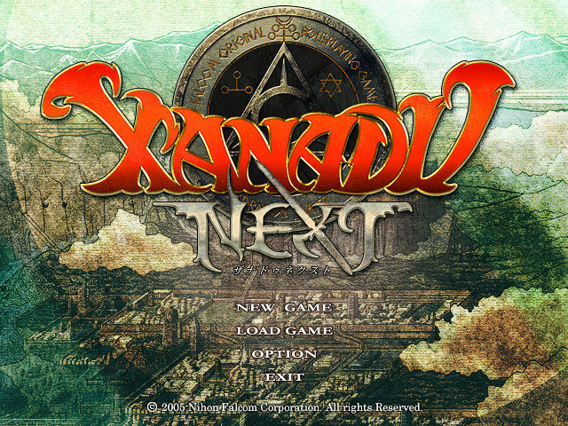
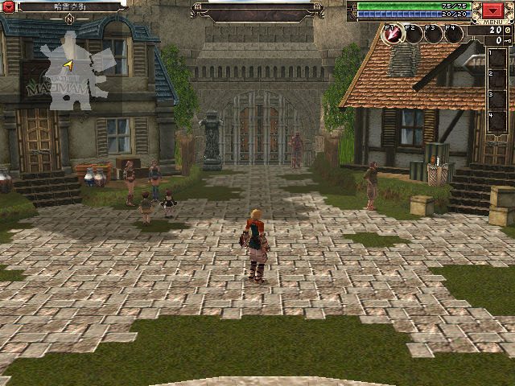

名稱：迷城國度 (Xanadu Next，中文／英文版)
簡介：Falcom 2005年出品的角色扮演遊戲，2006年由英特衛中文化並代理發行，以3D固定視
角畫面呈現，採單人即時方式戰鬥 [待補]。


保護：繁中版為光碟StarForce（序號=W4YFX-JNPNH-69HD5-7YJ5A-4NGQ5）
備註：繁中原始版無法使用英文／日文免光碟檔。
備註：原始版VirtualBox有貼圖問題，虛擬機請使用VMware。
備註：原始版若執行有問題，可試著做下列遊戲設置：
取消硬體頂點處理
不使用背景緩衝
不使用全螢幕
備註：原始版必須有下列目錄才能存檔，可透過[遊戲設置]-[其他]-[開啟儲存資料夾]建立：
C:\Documents and Settings\使用者名稱\Application Data\FALCOM\X_NEXT
檔案：setup_xanadu_next_24.11.2016_(16643).rar = GOG英文版（需Win64）
GOG_Cht.rar = GOG版繁化檔（和原始繁中版翻譯的名詞不太相同，Steam版無效）
Xanadu.Next.v2022.01.18.rar = Steam英文版（需Win64）
操作：連按滑鼠右鍵2下 = 略過劇情